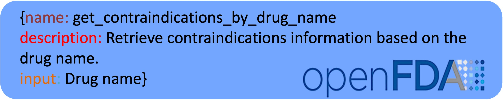
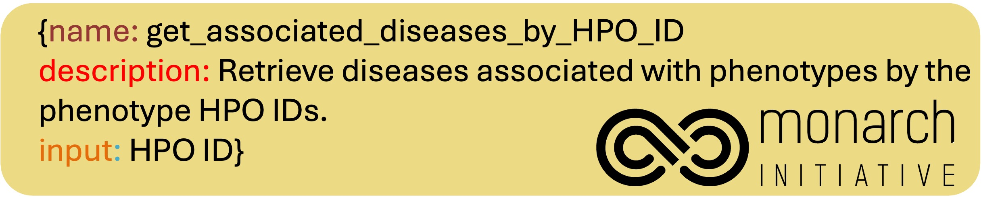

ToolUniverse

Tool example linked to OpenFDA.

Tool example linked to OpenTarget.

Precision therapeutics require multimodal adaptive models that generate personalized treatment recommendations. We introduce TxAgent, an AI agent that leverages multi-step reasoning and real-time biomedical knowledge retrieval across a toolbox of 211 tools to analyze drug interactions, contraindications, and patient-specific treatment strategies. TxAgent evaluates how drugs interact at molecular, pharmacokinetic, and clinical levels, identifies contraindications based on patient comorbidities and concurrent medications, and tailors treatment strategies to individual patient characteristics, including age, genetic factors, and disease progression. TxAgent retrieves and synthesizes evidence from multiple biomedical sources, assesses interactions between drugs and patient conditions, and refines treatment recommendations through iterative reasoning. It selects tools based on task objectives and executes structured function calls to solve therapeutic tasks that require clinical reasoning and cross-source validation. The ToolUniverse consolidates 211 tools from trusted sources, including all US FDA-approved drugs since 1939 and validated clinical insights from Open Targets. TxAgent outperforms leading LLMs, tool-use models, and reasoning agents across five new benchmarks: DrugPC, BrandPC, GenericPC, TreatmentPC, and DescriptionPC, covering 3,168 drug reasoning tasks and 456 personalized treatment scenarios. It achieves 92.1% accuracy in open-ended drug reasoning tasks, surpassing GPT-4o by up to 25.8% and outperforming DeepSeek-R1 (671B) in structured multi-step reasoning. TxAgent generalizes across drug name variants and descriptions, maintaining a variance of <0.01 between brand, generic, and description-based drug references, exceeding existing tool-use LLMs by over 55%. By integrating multi-step inference, real-time knowledge grounding, and tool- assisted decision-making, TxAgent ensures that treatment recommendations align with established clinical guidelines and real-world evidence, reducing the risk of adverse events and improving therapeutic decision-making.
pip install tooluniverse
pip install txagent
https://github.com/mims-harvard/TxAgent
pip install tooluniverse
@misc{gao2025txagent,
title={TxAgent: An AI Agent for Therapeutic Reasoning Across a Universe of Tools},
author={Shanghua Gao and Richard Zhu and Zhenglun Kong and Ayush Noori and Xiaorui Su and Curtis Ginder and Theodoros Tsiligkaridis and Marinka Zitnik},
year={2025},
eprint={2503.10970},
archivePrefix={arXiv},
primaryClass={cs.AI},
url={https://arxiv.org/abs/2503.10970},
}If you have any questions or suggestions, please email Shanghua Gao and Marinka Zitnik.